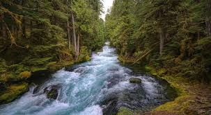

Encuentras un río de agua cristalina. Tu garganta está seca y el cansancio empieza a afectarte. El agua parece pura, pero no sabes si es segura. Podrías arriesgarte y beber… o ser más inteligente y seguir el curso del río. Tu cuerpo necesita hidratación urgente.
Escoge con sabiduría
Beber agua directamente
Seguir el río